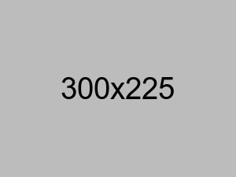

Our Club
The club is ran by a small commitee of local volunteers who ensure the club is able to support the teams and events at the club. Along with football the club has hosted many events, including weddings and the highly successful annual summer ball.
Our history backdates as far as 1921, from a club run out of the Half Moon Inn, based only a few minutes walk from White Cross.
-

2014
A second straight promotion for Cheriton Fitzpaine finishing runners up of Division 4 after finishing runners up of Division 5 the year before.
-

2009
The 2009 season saw the Cherries victorious in the Geary Cup, a welcome success after a dry spell from silverware.
-

2000
After being promoted to Senior 2 as runners up of Senior 3 no one expected Cheriton Fitzpaine to run away with the league in such convincing manner, but only dropping points in 2 games was enough to win the division.
-

1996
Cheriton Fitzpaine were the elite team in the Devon and Exeter Football league in 1996 after winning the Premier Division only losing one game and racking up an impressive +34 Goal Difference. This was after many years of dominating the lower Divisions: 1994, Champions of Senior 1. 1993, Champions of Senior 2. 1992, Champtions of Senior 3. 1991, Champions of Senior 4. 1990, Champions of Intermediate 1. 1989 Champions of Intermediate 2. Finally, runners up of Intermittediate 3 in 1988.